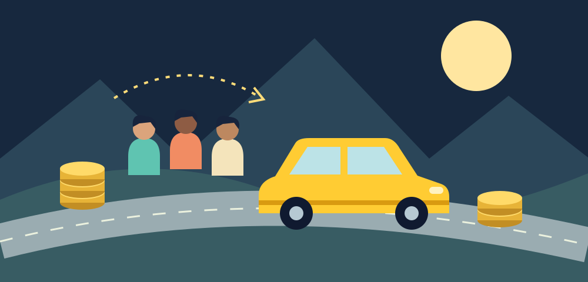

01 / Save money
More room in the car.
More room in your budget.
A visit to family, a trip to the airport, or a weekend in the mountains should not feel out of reach because of the cost of getting there. Meanwhile, many cars already making those journeys have seats sitting empty. TravelDuckling starts with that simple opportunity: help people share a journey that is already being planned.
For a driver, sharing available seats can help offset travel expenses. For a rider, contributing to a shared journey can be more affordable than paying for an entire private ride or driving alone. The aim is a fair exchange that makes sense for everyone, with clear expectations before people agree to travel together.
Our Shared rides area connects people going a similar way. Our separate Group trips area helps people come together around an experience. Both serve the same purpose: make it easier to say yes to the places and people that matter. Actual savings depend on the route, the contribution, and the alternative you would otherwise choose.
